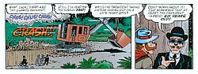
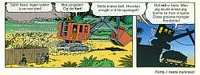
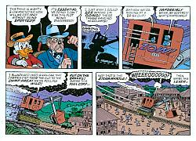
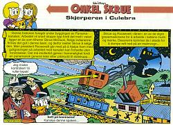
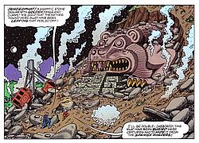
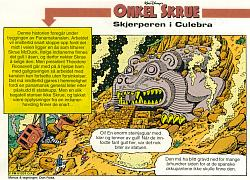

The Sharpie of The Culebra Cut
|
 Single-part version (US) Bottom panels of page 9 |
 Serial version (NOR) Bottom panels of page 9 |
|
 Single-part version (US) Top half of page 10 |
 Serial version (NOR) Splash panel, part 2 |
|
 Single-part version (US) Top half of page 18 |
 Serial version (NOR) Splash panel, part 3 |
|
|
|
This story is chapter 10b of Lo$. It was done for French Picsou because Egmont once told Don Rosa that they didn't want any more Lo$ chapters. It was first published in Picsou Magazine #349 [Feb. 2001]. This story is also the first where the two versions differ in the bottom of a page. The change seems to have been done by Egmont to make the splash-panel for part-2 to fit better in.